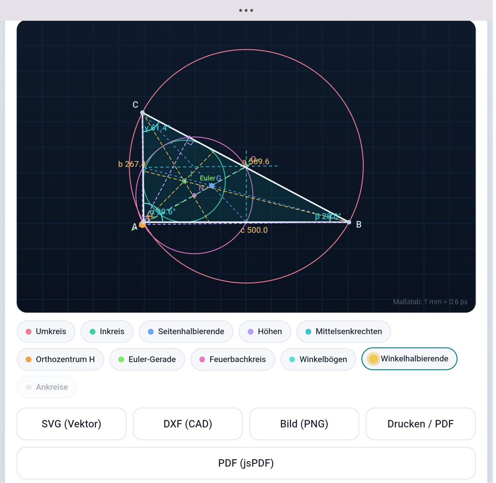
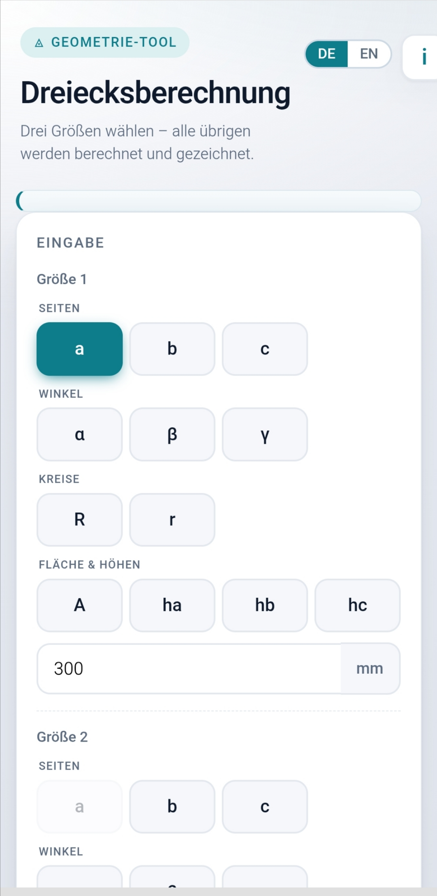
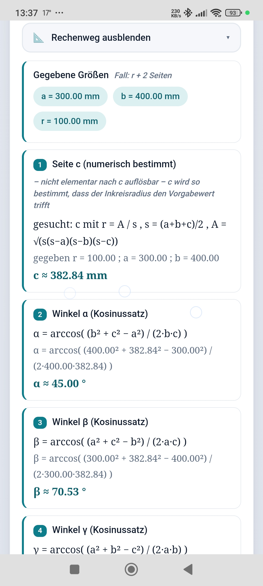

◬ Geometrie-Werkzeug für die Werkstatt
Dreiecke berechnen und
Dreiecke berechnen und
direkt als DXF an die CNC.
Drei Größen eingeben – alles andere wird berechnet, gezeichnet und als DXF, SVG oder PDF exportiert. Läuft offline als eine einzige Datei. Keine Installation.
✓ Offline ✓ Eine Datei ✓ Handy · Tablet · PC

In der Praxis
Vom Wert zum fertigen DXF
Kurzes Werkstattvideo: ein Winkel am Werkstück, in Sekunden als DXF in CAD und CNC.
Von der Eingabe bis zum Ergebnis
Leicht zu bedienen.
Was die Vollversion kann
Berechnet, was kein Gratis-Tool kann
DXF
Direkt für CAD & CNC
Echtes DXF in realen Einheiten, sauber nach Layern getrennt – sofort importierbar.
R r
Umkreis, Inkreis, Fläche, Höhen
Aus Spezialgrößen das ganze Dreieck rekonstruieren – der Burggraben der Vollversion.
∑
Voller Rechenweg
Schritt für Schritt nachvollziehbar, ideal für Werkstatt-Doku und Ausbildung.
⤓
Export überall
PNG, SVG, DXF und Drucken/PDF – alles offline verfügbar.


Vollversion
DT-ProfiDreieck Pro
69 € einmalig
- Sofortiger Download nach dem Kauf
- Läuft offline, keine Installation
- Sichere Abwicklung über Digistore24
- Alle Spezialfälle & Exporte freigeschaltet
Lieber erst ausprobieren? Gratis-Version testen